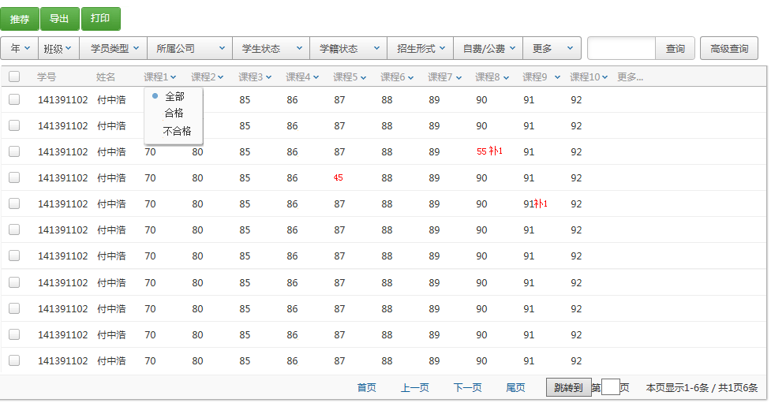

 上面列表的成绩中有不合格的分数用红字显示 ，补考的成绩旁边显示补1（1代表补考1次）。本班的教员只能看本班的学生成绩。鼠标在分数上悬停可查看考试日期。 更多的下拉列表里面是：合格（所有已录入课程分数）、不合格（所有已录入课程分数）、全部（清楚条件显示所有数据）。 每门成绩均可按照合格、不合格 查询。导出到excel文件，打印：实现打印报表功能，利用iReport-5.0.0打印成绩。 推荐考试将学生基础信息表：studentBaseInfo的i_tjexam字段值设置为1